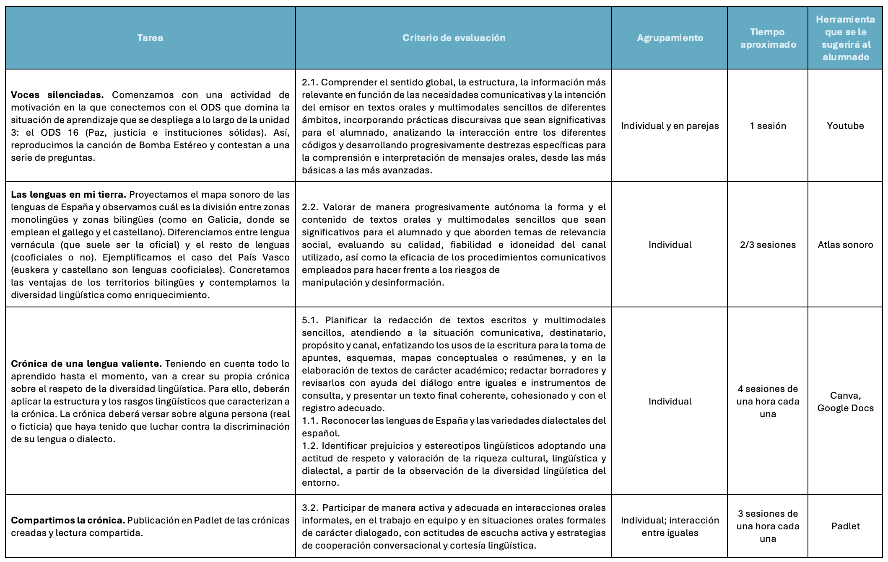

Concreción curricular

<strong>Orientaciones para la Inclusión (DUA)</strong>
Este proyecto ha sido diseñado bajo los principios del Diseño Universal para el Aprendizaje:
Múltiples formas de representación: La información se presenta en texto, audio (canción), visual (infografía y mapas) y digital (REA).
Múltiples formas de acción y expresión: El alumnado puede realizar el borrador de su crónica de forma analógica o digital, y el producto final permite creatividad multimodal en Canva.
Múltiples formas de compromiso: Se fomenta el trabajo cooperativo y la vinculación emocional con temas de actualidad e identidad personal.
Gestión de la incertidumbre
Como responsables del aula digital, hemos previsto las siguientes medidas de apoyo y asesoramiento:
Protocolo TIC: Antes de cada sesión, el docente verificará la carga de los portátiles. Se designará un monitor TIC por grupo para resolver incidencias básicas (login, conectividad).
Plan de Contingencia (Plan B): En caso de caída de la red, los portátiles disponen del procesador de textos instalado y plantillas físicas para la maquetación de crónicas. La evaluación priorizará la competencia lingüística sobre el acabado digital si surgieran imprevistos técnicos insalvables.